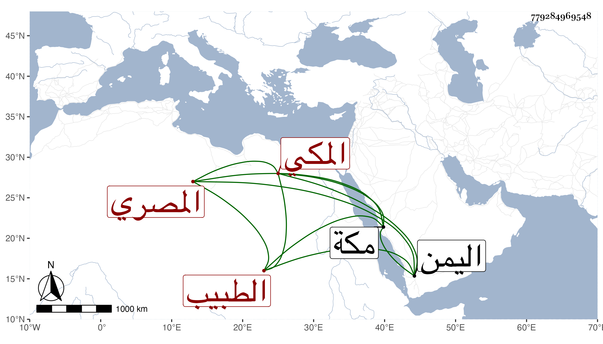

0902Sakhawi.DawLamic.ITO20230111-ara1.EIS1600.779284969548
Biography ID: 779284969548
284
محمد بن عبد الله المصري ثم المكي الطبيب ويعرف بالخضري بمعجمتين الأولى مضمومة والثانية مفتوحة . ذكره شيخنا في إنبائه وقال : كان يعاني الطب والكيمياء والنار نجيات والنجوم وأقام بمكة مدة مجاورا ، ولقيته بها سنة ست ثم دخل اليمن فأقبل عليه سلطانها الناصر فيقال إن طبيب الناصر دس عليه من سمه فهلك في سنة ثمان وكان هواتهم بأنه دس على الرئيس الشهاب المحلى التاجر سما فقتله في آخر سنة ست .
